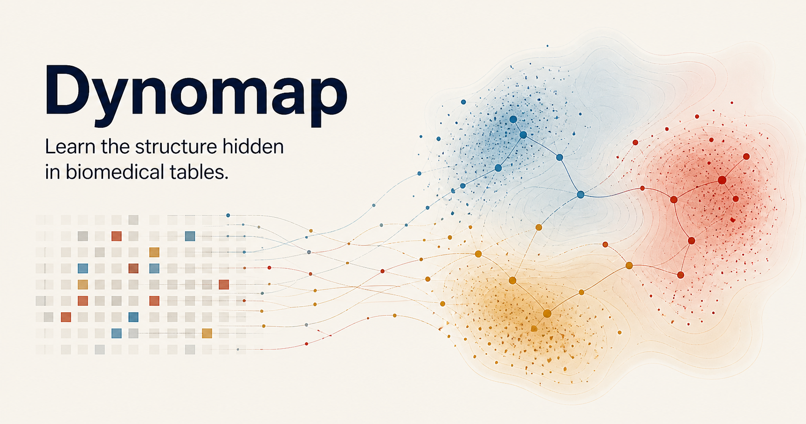
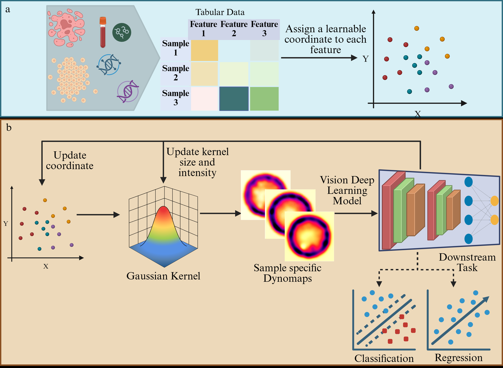
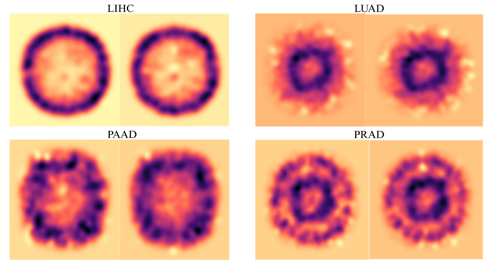
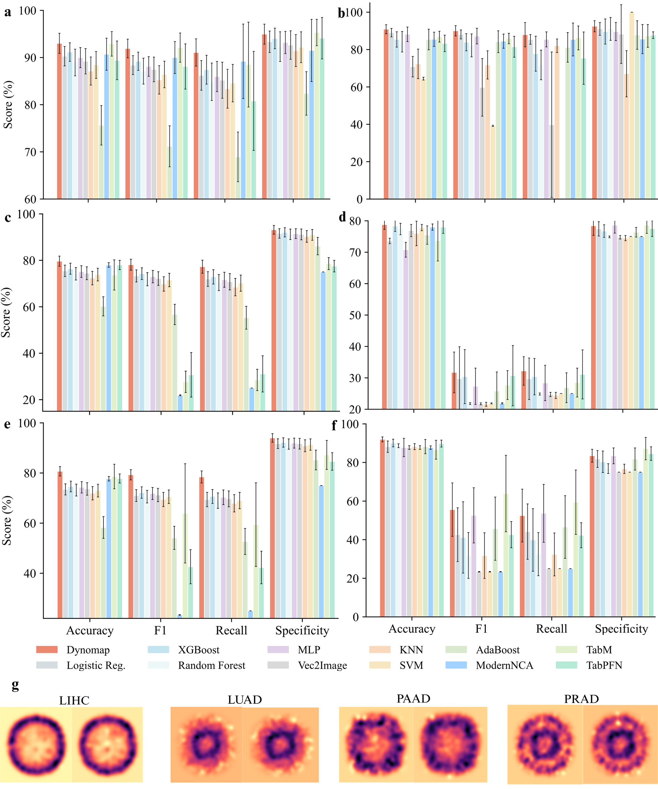
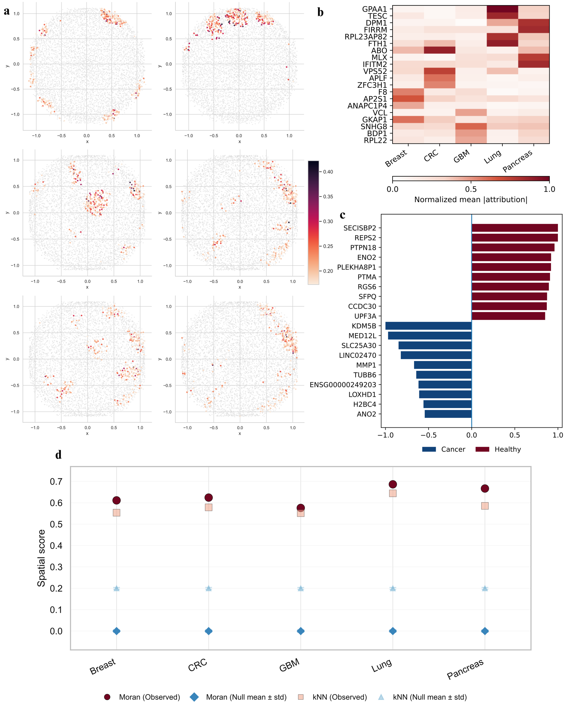
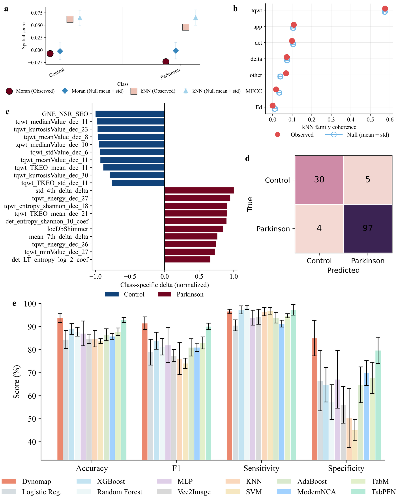
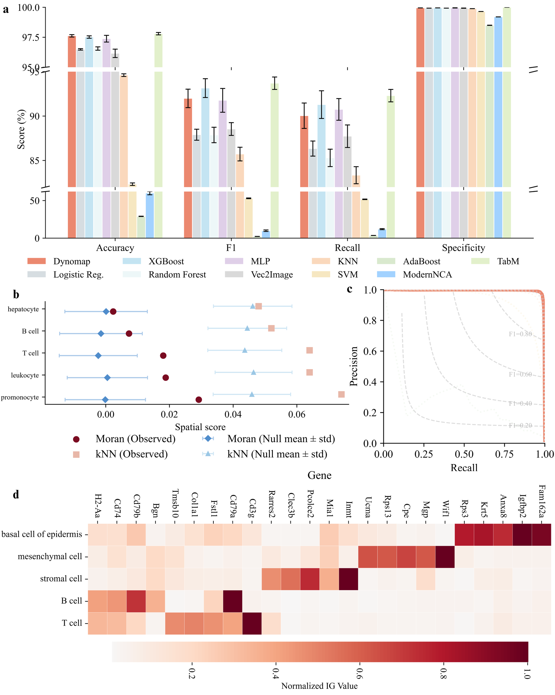

Gate predictive signal
A learned feature gate modulates each measurement while preserving its identity and direct contribution to the classifier.

Vision-Based Deep Learning of Biomedical Tabular Data via Self-Supervised Cartographic Representation
Current manuscript metadata shown above · arXiv:2603.22675 is an earlier title and author version
A silent visual overview using the current manuscript cover, Figure 1, real RARE-Seq Dynomaps, and actual learned-layout figures. Nothing in the video is a randomly generated scientific result.

Ordinary tabular models receive features as an unordered vector. Dynomap makes feature organization an explicit, trainable part of the predictive model.
A learned feature gate modulates each measurement while preserving its identity and direct contribution to the classifier.
Every feature receives a continuous two-dimensional coordinate. Nearby measurements interact through differentiable Gaussian rendering.
A convolutional model reads the rendered map together with the gated feature vector, and both prediction and layout are optimized end to end.
Each card opens its existing Dynomap result in the analysis workspace. These are stored aggregate evaluations, not fresh retraining.
Loading 59 saved analyses…
We independently retrained Dynomap for ten donor-disjoint cancer-versus-control tasks spanning plasma cell-free RNA, extracellular-vesicle RNA, and tumor-educated platelet RNA.
Pooled out-of-fold AUROCs ranged from 0.835 to 0.982. Each cohort, carrier, disease contrast, feature-selection step, and cross-validation fold was evaluated independently.

These panels are extracted directly from the current manuscript and supplementary PDF. They show real sample maps, learned feature positions, attribution patterns, and spatial-null comparisons.





Tabular data constitute a dominant representation in biomedical science. Unlike images, texts, or time series, tabular representation of a dataset generally lacks structural organization: features are treated as unordered dimensions, and their interrelationships must be inferred implicitly by learning algorithms. This fundamental structural limitation constrains the ability of convolutional neural networks, vision transformers, and other structure-aware vision architectures to exploit local correlations and higher-order interactions that encode underlying biological and clinical signals. Here we introduce Dynamic Feature Mapping (Dynomap), an end-to-end deep learning cartography framework that learns a task-optimized spatial topology of features directly from data. Dynomap discovers inter-feature dependencies and jointly optimizes their spatial arrangement with a predictive objective through a differentiable rendering mechanism, without reliance on heuristics, predefined feature groupings, or external priors.
By transforming high-dimensional tabular vectors into learned feature maps, Dynomap enables vision-based deep learning architectures to operate effectively on non-spatial biomedical inputs and achieves substantially better predictive performance compared to existing state-of-the-art methods across clinical and biological datasets. When applied to a lung cancer liquid biopsy dataset from Stanford Hospital, Dynomap organizes genes from a curated cancer-associated panel into coherent spatial structures and improves multiclass cancer subtype prediction accuracy by up to 18% relative to classical and state-of-the-art deep learning tabular analysis methods. In a Parkinson’s disease voice dataset, Dynomap spatially clusters disease-associated acoustic descriptors, including tunable Q-factor wavelet energy and entropy measures linked to vocal instability, and yields accuracy gains of up to 8% compared to state-of-the-art techniques. Similar performance improvements were observed when Dynomap was applied to 13 additional public tabular benchmarks spanning molecular and non-biomedical domains. By converting unordered feature spaces into learned spatial representations, Dynomap establishes a general and principled strategy for bridging tabular and vision-based deep learning and enables the discovery of structured, task-relevant patterns from unordered high-dimensional biomedical data.
@article{mostafa2026dynomap,
title = {Vision-Based Deep Learning of Biomedical Tabular Data via Self-Supervised Cartographic Representation},
author = {Mostafa, Sakib and Jiang, Yuming and Zou, James and Massoud, Tarik F. and Alizadeh, Ash A. and Diehn, Maximilian and Xing, Lei and Islam, Md Tauhidul},
year = {2026},
note = {Manuscript; earlier version available as arXiv:2603.22675},
url = {https://arxiv.org/abs/2603.22675}
}
The private beta accepts one labelled CSV or separate feature and label CSV files. Rows must correspond in the same order. Choose the outcome column and, if applicable, a donor or subject column.
Open the analysis workspace →Cross-validation estimates performance within the uploaded dataset. It does not establish transportability to another institution, assay, population, or clinical setting.
Feature attribution describes the fitted model and does not establish biological causality. Do not upload protected health information or direct identifiers.
{kind=link}
{kind=link}
{kind=link}
{kind=link}
{kind=link}